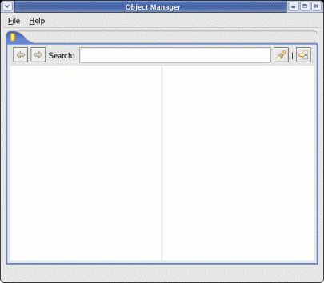
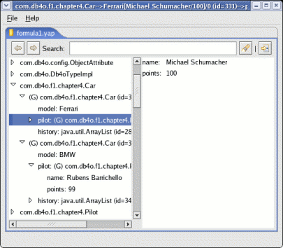
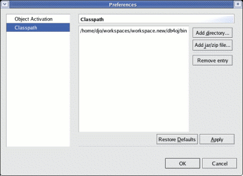
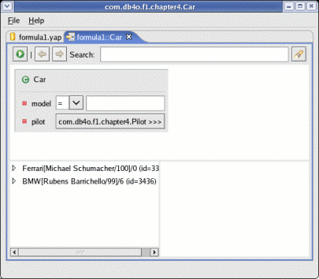

22. Object Manager22.1. IntroductionThe db4o Object Manager provides a simple way to efficiently browse the objects that are stored in your database. Object Manager currently provides the following features:- Open either a local database file or a db4o database server - Browse objects in a database - Query for objects using a simple graphical query by example. 22.2. Object Manager TourUpon opening, the Object Manager will look like the following:  At this point, you can either - Open a db4o database file - Open a connection to a db4o database server In order to open a db4o database file, simply choose "File | Open..." and choose the db4o database file to open. In order to open a connection to a db4o database server, choose "File | Connect to server...", then enter a host name, port number, username, and password into the resulting dialog box. When the database is open, the Object Manager will list all classes stored in the database in the left-hand tree pane. Expanding a tree item will show instances of objects in the class, then fields within the instance, etc. The right-hand pane will show the next level of detail for the item that is currently selected in the tree. For example, loading the formula1 database created by chapter 4 of this tutorial produces the following:  22.2.1. Generic reflector versus the JDK reflectorYou will notice in the screen shot that all objects have (G) in front of them. This is because the Object Manager does not know the correct classpath in order to load the actual Java classes that these objects represent, so it is displaying them generically (using the generic reflector). The Object Manager can display some data types more naturally if it has the class definitions available, so it provides a way to extend its classpath at runtime so that it can find the Java or .NET class definitions. This is done through the preferences dialog, accessed through "File | Preferences..." Let's add the classpath of the db4o chapter 4 tutorial classes: - Choose "File | Preferences..." - Select the "Classpath" page of the preferences dialog box - Choose the "Add directory..." - Select the directory you have selected as your output directory for compiling the db4o tutorial files and click OK. (You can add a Jar or zip file similarly.) Your preferences dialog should look something like the following when you are done:  Click OK to close the Preferences dialog box. Now your tree will be refreshed, and you will notice that all of the (G)'s are gone. All of your preference settings, including your preferred classpath, are stored in a db4o database called .objectmanager.yap in your home directory. 22.2.2. Querying for objectsYou may now want to query your object database for objects based on some criteria. This will work using either the generic or the JDK reflector. You can open a query editor using any of the following methods: - Double-click a class name in the tree view. - Click the query button at the right side of the tool bar. - Choose "File | Query..." from the menu. If you choose either of the latter two options, you will then be presented with a dialog box allowing you to choose a class to query. Select a class and click OK to proceed. Your new query will open in a new tab. Let's query for Car objects in our formula1.yap file. Open a query editor using your favorite of the methods listed above. By default it will look like the following:  You may now query for a model name, or you can descend on the "pilot" field by clicking the button next to the pilot field to expand the query editor to include a Pilot object. If you accidentally expand a class that you didn't intend to expand, that isn't a problem. Just leave all of the fields blank and they will be ignored. At this point, you can query for any combination of field values simply by filling appropriate values into each field. You can change the constraint type using the combo boxes next to each field. And you can run the query using the green "run" button at the top-left of the tool bar. 22.3. Known bugs and limitationsThe following are known bugs and limitations in Object Manager and their workarounds: - Object Manager currently operates in read-only mode only. - If a database includes fields that have been renamed, Object Manager correctly browses both the old and new versions of the fields. However, queries on fields that have been refactored will randomly select the old or the new version of the field. The workaround is to browse a backup or defragmented database. - The Generic Reflector still has trouble expanding certain types of objects. Currently, we recommend running Object Manager with all classes available at all times by using the Classpath preference page to set an appropriate classpath. If something goes wrong when using Object Manager, there almost certainly will be detailed error messages in the Object Manager log file. This file is named .objectmanager.log and is stored in your user's home directory. If you post a question on the db4o newsgroups concerning a crash or failure in Object Manager, please also attach a copy of your Object Manager log file, so that we can efficiently diagnose the problem. This file is overwritten each time you run Object Manager, so please make a copy of it after an error occurs so that this diagnostic information is not lost. -- generated by Doctor courtesy of db4objects Inc. |